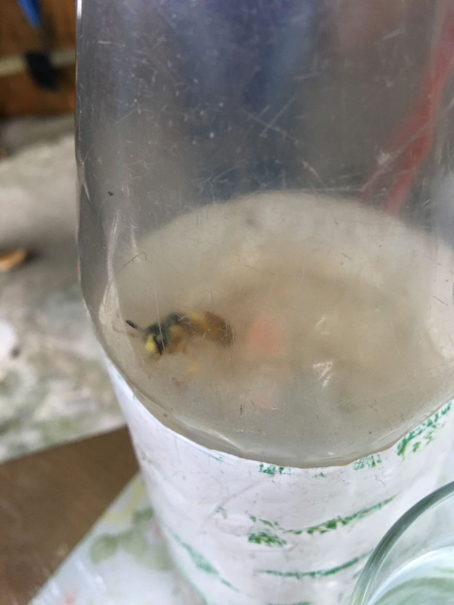
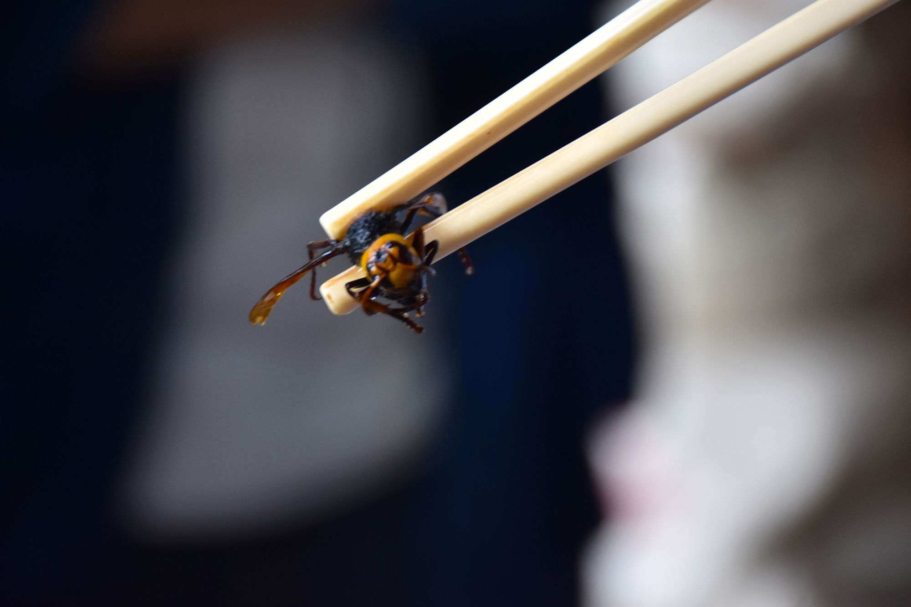
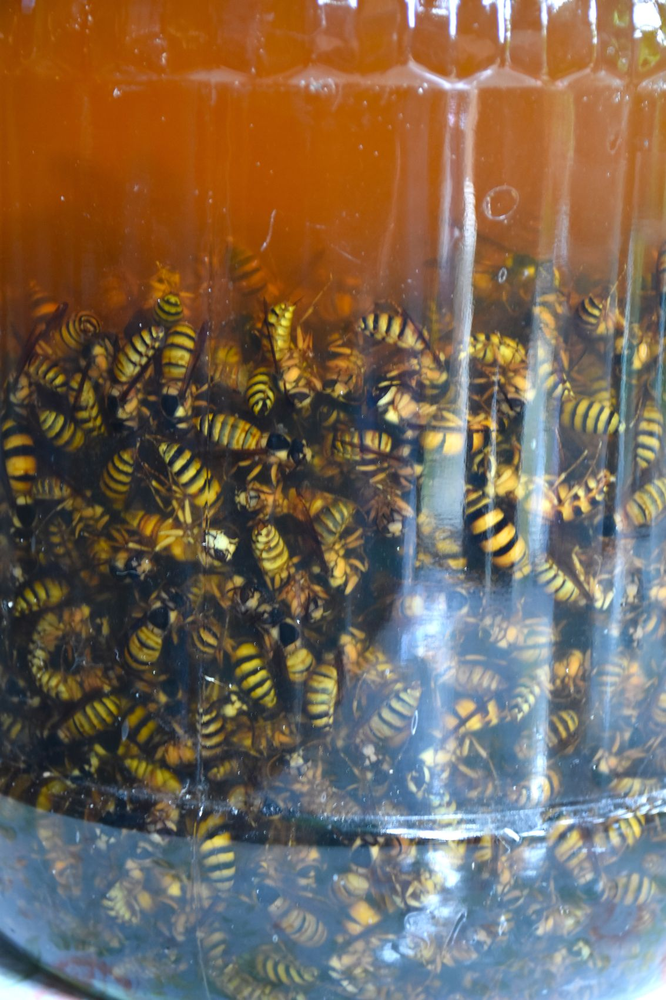

光板田村李生
性格斯文愛玩，令他在養蜂中獲益良多，對於蜜蜂的知識十分清楚。
李生，約50多歲，三十年前來到香港，十多歲已經開始對養蜂有興趣。



一開始，養蜂純粹覺得有趣、想玩，又可以得到蜜糖；其後，更逐漸嘗試把黃蜂浸酒或炒、炸黃蜂蛹，除一嚐新鮮外，更體驗出另一番養蜂生活來。
剛好他住的地方，有蜜蜂寄居在山後所以結緣，一養便養了十年。
最高蜂時養了七十至八十箱，後來更與鄰居一起養。
他曾說過︰「自己對蜂沒什麼感情，因為蜂對人都沒什麼感情」，蜂仔只會對你「有反應但沒回應」，意指當有外物接觸牠們時，會作出反應，或是振動、或是攻擊，但從不會回應，字言片語也未曾；在蜂群中殺死蜂王，蜜蜂自然會攻擊你，從不因你是飼養人而服從，嚴生說︰「沒有感情可言！」
儘管對蜜蜂們沒帶感情，但李生對養蜂的興趣從來沒有減退過，仍一直為蜜蜂建立新的居所。